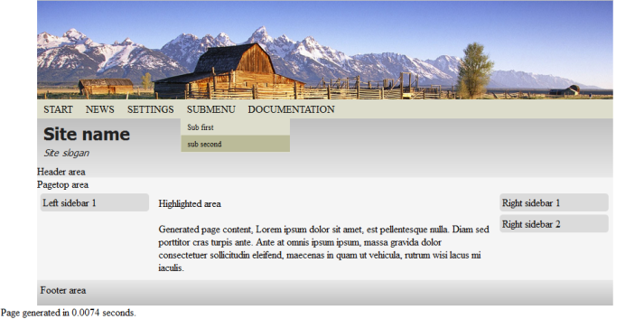

Themes
Themes allow you to change the look and feel of your CodKep site. The html structure of the site, the headings, sidebars blocks, footers are built by the current theme. You can associate your generated contents to this part of sites.
Functions unrelated to themes
There is many helper functions to change the style and the behaviour of the site which independent of themes. You can always use this functions in every code to modify/set the things below.
add_style($text)
This function adds an arbitrary css code to the page. The $text parameter have to contains the css code
which will insert into the html head between style tag. (Embedded into the html file)
//Draws a 100x50 pixel sized red box
print '<div class="redbox"></div>';
add_style("div.redbox { display: block; width: 100px; height:50px; background-color: #ff6666; }");
add_header($text)
Add an arbitrary text to the html head part.
//Set the page automatically refreshed in every 10 sec
add_header('<meta http-equiv=”refresh” content=”10" />');
add_css_file($loc)
Adds a css file reference to the html header. The $loc parameter contains the location of css file.
The $loc parameter will passed to the url() inside.
add_css_file('/site/mycss.css');
//It will generate a <link rel="stylesheet" href="/site/mycss.css"> tag to the header.
add_js_file($loc)
Adds a javascript file reference to the html header. The $loc parameter contains
the location of javascript file.
The $loc parameter will passed to the url() inside.
add_js_file('/site/myfuncs.js');
//It will generate a <script type="text/javascript" src="/site/myfuncs.js"></script> tag to the header.
set_title($text)
Sets the (html) title of the current page.
set_icon($iconurl)
Sets the icon of the current page.
It will generate the shortcut icon header tag for the current page.
The $iconurl parameter will passed to the url() inside.
Note: It should used "ico" format file for compatibility reasons.
add_author_data($author)
Adds the author html header metadata to the page. The parameter passed author string will be the metadata value.
add_seo_data($description,$keywords,$revisitafter)
Adds some SEO data to the page, the page description, the search keywords and the revisit after value.
(Example for revisit after value: "2 days")
add_seo_data("Page for booking rooms in Sunshine hotel",
"hotel booking vacation sunshine",
"2 days");
get_startpage()
It returns the currently set start page location.
Using of themes
Bigger changes of the style or structural changes can achieved by themes.
You can set the default theme in your site settings by
set $site_config->default_theme_name variable to the desired theme name.
Although usually the default theme is used the internal locations
can override this default theme and can use different theme.
Every theme has an unique name which identify the theme. By default two built in theme present in CodKep:
base_page- A simple page without any visual block and style element. It is often used for error handling pages, login pages and other locations where the users shouldn't see any more disturbing information.flex- More powerful responsive theme with a lot of page area and style element. (The default if not set in_settings.php)
The page areas usable in flex theme:

- Logo image area. You can set the logo image by
$site_config->logo_img_urlsetting. By default no logo is set for the site. - The site name and slogan. You can set the site name and slogan by
$site_config->site_nameand$site_config->site_slogansettings. headerarea. You can set arbitrary content here bysitearea_headerhook.sidebar_leftarea. You can set arbitrary content here bysitearea_sidebar_lefthook.sidebar_rightarea. You can set arbitrary content here bysitearea_sidebar_righthook.pagetoparea. You can set arbitrary content here bysitearea_pagetophook.highlightedarea. You can set arbitrary content here bysitearea_highlightedhook.footerarea. You can set arbitrary content here bysitearea_footerhook.
Place your own content to a site area
The themes can have site areas which is usable to place your contents. This site areas are defined by themes itself, and can be different in every theme.
You can assign your content with a site area with the sitearea_XYZ hook
where the XYZ is the name of the area where your content should located.
The sitearea_XYZ hook have to return an array of associated arrays which specify the contents to be show:
"name" = name_string- The name of the block to show. This name won't be show on the page, but usable to reach the content in some hooks like
alter_sitearea.
- The name of the block to show. This name won't be show on the page, but usable to reach the content in some hooks like
"index" = integer- And index value which specify the orders of the block if more assigned to same area.
"callback" = php_function_name- The function callback to generate the content of the block to assign.
"file" = filename- This value is works as
"callback"but this way the CodKep will execute the specified php file instead of callback function.
- This value is works as
Example of put some content to right sidebar:
function hook_mym_sitearea_sidebar_right()
{
$def = [];
$def[] = [
'name' => 'MySidebarBlock',
'index' => 1,
'callback' => 'my_custom_block_cb',
];
return $def;
}
function my_custom_block_cb()
{
ob_start();
print '<div class="content">';
print "Something text here.";
print '</div>';
return ob_get_clean();
}
Settings of flex theme
The flex theme have some settings which can set in site settings.
Note: You have to put global $flex before modify any settings.
| name | default | description |
|---|---|---|
$flex->mainmenu_pos | BETWEEN_LOGO_HEADER | Controls the location of main menu. Possible values are ABOVE_LOGO, BETWEEN_LOGO_HEADER and BELOW_HEADER |
$flex->sidebar_blocks_have_border | false | Sets wheter the sidebar boxes have borders. |
$flex->disable_builtin_flexcss | false | The true value disables the loading of flex css file. It makes possible to change the default css to a new one. |
$flex->disable_builtin_colorcss | false | The true value disables the loading of color flex css file. It makes possible to change the default colors to a new. |
$flex->allow_empty_footer | false | Set true to allow footer show without any content. |
$flex->disable_logo_link | false | If this option is true the logo image top of the header will be a simple img without html link. |
$flex->size_of_left_sidebar_desktop | 4 | The width of the left sidebar in desktop mode. (Means that width > 768px) If the value is n the width is will be n/20 percent of the full page. |
$flex->size_of_centerarea_desktop | 11 | The width of the center area between sidebars in desktop mode. (Means that width > 768px) If the value is n the width is will be n/20 percent of the full page. |
$flex->size_of_right_sidebar_desktop | 5 | The width of the right sidebar in desktop mode. (Means that width > 768px) If the value is n the width is will be n/20 percent of the full page. |
$flex->size_of_left_sidebar_mobile | 4 | The width of the left sidebar in mobile mode. (Means that width < 768px) If the value is n the width is will be n/20 percent of the full page. |
$flex->size_of_centerarea_mobile | 11 | The width of the center area between sidebars in mobile mode. (Means that width < 768px) If the value is n the width is will be n/20 percent of the full page. |
$flex->size_of_right_sidebar_mobile | 20 | The width of the right sidebar in mobile mode. (Means that width < 768px) If the value is n the width is will be n/20 percent of the full page. |
$flex->mainmenu_stay_fixed_scrolldown | 0 | If this value is larger than zero the mainmenu will stay on to of the page after scrolled down with this value. |
$flex->logoimage_parallax_scrolling | false | If this settings is true the logo image is stay fix position and the content is scrolled on it with "parallax srolling". You have to set $flex->logoimage_parallax_height to use this. |
$flex->logoimage_parallax_height | 200 | The height of the logo image in case of "parallax scrolling". (Other way the image size is used.) |
$flex->mainmenu_structure_prefix | '' | Prints this text before the generated mainmenu structure. |
$flex->mainmenu_structure_suffix | '' | Prints this text after the generated mainmenu structure. |
Note for size_of... settings: The sum of left, right and center values should not be more than 20
because the values means the 1/20 percent of full page. These values can be recalculated by CodKep
if some sidebar does not present. The missing sidebar values are added to center the area's value.
Create own themes
You can create your own themes in CodKep.
This themes can change the whole site structure/design and can completely rewrite the whole generation content.
Now I tell you how to do this:
The CodKep themes are simple modules. (See modules chapter to learn
how to create own modules.) To create a new theme you have to use the theme hook.
The theme hook have to return an array of associated arrays which defines the themes.
"name_string" =- An associative array which defined the properties of new theme. The
name_stringis the unique name of the new theme. There is two mandatory element of this array:"pageparts" =- An array of strings where the strings items will be the page part names defined by the theme.
"generators"- An associative array which specify 4 callback function of the theme
"runonce" => "php_function_name_1"- It runs every time when a page generated with this theme. The
php_function_name_1function will receive the$contentparameter and the return value is dropped. You can use the styling functions to set some header, css or javascript files here.
- It runs every time when a page generated with this theme. The
"htmlstart" => "php_function_name_2"- It should generate the html starter string without the html
headpart. Theheadsection will be generated by CodKep. Thephp_function_name_2function will receive the$routeparameter.
- It should generate the html starter string without the html
"htmlend" => "php_function_name_3"- It should generate the html end string after the html
bodyclose tag. Thephp_function_name_3function will receive the$routeparameter.
- It should generate the html end string after the html
"body" => "php_function_name_4"- It should generate the whole page html content from the
bodyopen tag tobodyclose tag. Thephp_function_name_4function will receive the$contentand the$routeparameters. The generated page content will available in$content->generatedand the generated page parts are in$content->pageparts['PAGEPARTNAME']array.
- It should generate the whole page html content from the
- An associative array which specify 4 callback function of the theme
- An associative array which defined the properties of new theme. The
Let's see and example of theme definition:
// Let's define the "fancy" theme in "mydesign" module
function hook_mydesign_theme()
{
$def = [];
$def['fancy'] = [
"pageparts" => [
"header",
"sidebar_left",
"sidebar_right",
"footer",
],
"generators" => [
"runonce" => "fancy_runonce",
"htmlstart" => "fancy_htmlstart",
"htmlend" => "fancy_htmlend",
"body" => "fancy_body",
],
];
return $def;
}
function fancy_runonce($content)
{
...
//Add headers css,javascript files, etc.
}
function fancy_htmlstart($route)
{
ob_start();
...
// Prints html starter content
return ob_get_celan();
}
function fancy_htmlend($route)
{
ob_start();
...
// Prints html end content
return ob_get_celan();
}
function fancy_body($content,$route)
{
ob_start();
...
/* Prints the content of the site between htmlstart and htmlend.
You can find the generated content in $content->generated;
The codes of the defined page parts are located in $content->pageparts['PAGEPARTNAME']
*/
...
print generate_menu_structure(); // main menu
...
print $content->pageparts['header'];
...
print $content->generated;
...
print $content->pageparts['footer'];
...
return ob_get_celan();
}
Menu system
Most site have a main menu, which helps to navigate on the site. The CodKep also support using of this kind of menu. There are two way to add elements to the main menu.
- Add menu array structure to
$site_config->mainmenuvariable.- You can do this in
_settings.phpor other places before the content generation. - The menu definition array is an associated array where the index will be the name in the menu, the value is an internal location to reference. (Passed to
url()inside) - The value can be an another array will be handled as submenu
- You can do this in
- Add
#mainmenutag to locations or pages.- By default the CodKep will append this items to the main menu if the
$site_config->mainmenu_append_tag_mainmenuvariable istruein_settings.php(default)
- By default the CodKep will append this items to the main menu if the
An example of main menu structure in _settings.php
$site_config->mainmenu["Start"] = "start";
$site_config->mainmenu["News"] = "news";
$site_config->mainmenu["Actions"]=[
'Post someting' => 'postcontent',
'Search something' => 'searchitem',
];
$site_config->mainmenu["Settings"] ="user_settings";
$site_config->mainmenu["Contact"] ="contactsite";
Note: The main menu can be modified by alter_mainmenu($obj) hook
immediately before the generation.
In case your default theme is the "flex" the main manu can located different positions.
You can specify the desired position by set the $flex->mainmenu_pos variable in site settings.
The possible values are:
ABOVE_LOGO- The main menu will nr shown on page top above the logo picture (if exists).BETWEEN_LOGO_HEADER(default) - The main menu will be shown between the logo and the site header.BELOW_HEADER- The main menu will be shown under the header and above the page content.
Custom themes and menu generation
In case a custom theme is used, the theme have to place the main menu to the appropriate place. The CodKep core has a helper function to generate the html structure of the main menu according to the settings seen above.
generate_menu_structure($pad='')
This function generate the html structure of the main menu according to
the $site_config->mainmenu variable and the #mainmenu tags if exists.
In order to place main menu to your custom theme, you should print the return value of this function
and add the necessary CSS to show this as menu.
The generate_menu_structure will generate the following html structure from code above
in the main menu settings example:
<ul class="menu">
<li class="first leaf "><a href="start">Start</a></li>
<li class="leaf "><a href="news">News</a></li>
<li class="expanded "><a href="">Actions</a>
<ul class="menu">
<li class="first leaf "><a href="postcontent">Post someting</a></li>
<li class="last leaf "><a href="searchitem">Search something</a></li>
</ul>
</li>
<li class="leaf "><a href="user_settings">Settings</a></li>
<li class="last leaf "><a href="contactsite">Contact</a></li>
</ul>
You can use the html structure generator functionality of generate_menu_structure for different kind of menus,
like user menu, or drop down menus by the following function:
menu_expand(array $m,$pad='')
This function will generate a html ul-li-ul-etc structure from a menu array explained at main menu.
The generate_menu_structure function also use this function to generate the content.
- Parameter
$mis the array which describe the menu to generate. - Parameter
$padis a padding string to prefix every line in generated code.
Hooks
The following hooks can be implement related to themes.
| Hook | Description |
|---|---|
| HOOK_sitearea_SITENAME() | You can assign your content callbacks with the appropriate site areas. |
| HOOK_theme() | Hook to define new themes. |
| HOOK_alter_sitearea($areaname,$name,$obj) | Hook to alter the generated content of site areas. |
| HOOK_flex_runonce() | Invoked by the flex theme if used. It runs once before the content generation |
| HOOK_alter_mainmenu($obj) | This hook can modify the main menu array structure immediately before the generation |